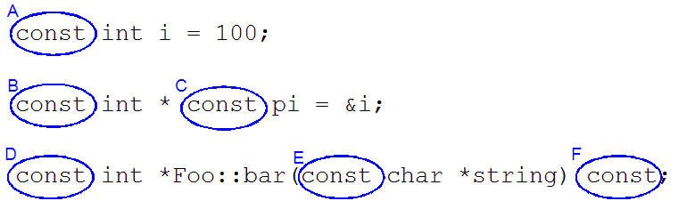
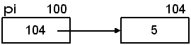
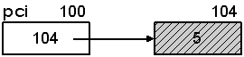
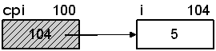
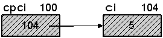

Introduction to const
If we want to make sure that certain variables in our program will never change, we mark them with the const keyword. (Constant variables? That's an oxymoron...) Not only does this document the code by indicating that the objects won't change, but it will also detect any "accidental" attempts at changing the object's value. The code below shows 6 typical uses of const:Notes:
Simple Uses of const (C and C++)
Creating constant values in C and C++ is simple and straight forward:
/* Globals */
int gi; /* 1. gi is initialized to 0 */
int gj = 10; /* 2. gj is initialized to 10 */
const int gci; /* 3. Illegal, gci must be initialized */
/* Locals */
void constvalues(void)
{
int i; /* 4. i is uninitialized (garbage) */
int j = 5; /* 5. j is initialized to 5 */
const int ci; /* 6. Illegal, ci must be initialized */
const int ci2 = 10; /* 7. Ok, ci2 is initialized to 10 */
const int ci3 = ci2; /* 8. Ok, ci3 is initialized to 10 */
const int ci4 = j; /* 9. Ok, ci4 is initialized to 5 */
i = 20; /* 10. Ok, assignment of 20 to i */
j = 12; /* 11. Ok, assignment of 12 to j */
ci2 = 10; /* 12. Illegal, can't assign to a const */
}
Pointers and const (C and C++)
With pointers, you have more flexibility with const. You can make the pointer itself constant, which means once it points at something, it can never be changed to point at something else. Or, you can make the data pointed at constant, which means that, although you can change the pointer to point at something else, you can't change what's being pointed at (through the pointer).
Here are the four cases. The shaded values indicate that they are const (protected).
int *pi; /* pi is a (non-const) pointer to a (non-const) int */

const int *pci; /* pci is a pointer to a const int */

int * const cpi = &i; /* cpi is a const pointer to an int */

const int * const cpci = &ci; /* cpci is a const pointer to a const int */

and mean that pci is a non-constant pointer to a constant int and that this:const int * pci; int const * pci;
means that cpi is a constant pointer to a non-constant int. Then, dereferencing:int * const cpi = &i;
so:*pci; /* *pci is a constant int */ *cpi; /* *cpi is an int */
*pci = 5; /* ILLEGAL, can't assign to a constant */ *cpi = 5; /* OK, you can assign to a non-constant */
void foo(void)
{
int i = 5; /* 1. i is a non-constant int */
int j = 6; /* 2. j is a non-constant int */
const int ci = 10; /* 3. ci is a constant int */
const int cj = 11; /* 4. cj is a constant int */
int *pi; /* 5. pi is a pointer to an int */
const int *pci; /* 6. pci is a pointer to a const int */
int * const cpi = &i; /* 7. cpi is a const pointer to an int */
const int * const cpci = &ci; /* 8. cpci is a const pointer to a const int */
i = 6; /* 9. Ok, i is not const */
j = 7; /* 10. Ok, j is not const */
ci = 8; /* 11. ERROR: ci is const */
cj = 9; /* 12. ERROR: cj is const */
pi = &i; /* 13. Ok, pi is not const */
*pi = 8; /* 14. Ok, *pi is not const */
pi = &j; /* 15. Ok, pi is not const */
*pi = 9; /* 16. Ok, *pi is not const */
pci = &ci; /* 17. Ok, pci is not const */
*pci = 8; /* 18. ERROR: *pci is const */
pci = &cj; /* 19. Ok, pci is not const */
*pci = 9; /* 20. ERROR: *pci is const */
cpi = &j; /* 21. ERROR: cpi is const */
*cpi = 10; /* 22. Ok, *cpi is not const */
*cpi = 11; /* 23. Ok, *cpi is not const */
cpci = &j; /* 24. ERROR: cpci is const */
*cpci = 10; /* 25. ERROR: *cpci is const */
pi = &ci; /* 26. DANGER: constant ci can be changed through pi */
}
Note the last line in the code says DANGER. In C, this is a warning, but in C++, this is an error.A final note: It is perfectly fine to have a pointer-to-const point at a non-const object:Important: If you have a constant object, you can only point at that object with a pointer that is declared to point at a constant. This means that you can not point at the constant object with a pointer that is NOT declared as pointing to a constant object. See #26 above. Consider this C warning as an error, because it should be.
/* i is non-const and can be changed through the variable name */ int i = 5; /* Ok, but i can't be changed through the pointer (but not really useful, since i isn't constant) */ const int *pci = &i; /* Ok, i is not const, so it can be changed */ i = 8; /* ERROR: can't change object that pci points to */ *pci = 8;
Also realize that a pointer does not affect the object it's pointing at. In the example above, the pointer, pci does not make i constant. The variable i is not constant, and will never be constant. The pointer, pci, just means that you can't change i through the pointer. You can only change i directly (through i).
Protecting Function Arguments (C and C++)
BackgroundIn general, the only arguments that may need protection are pointers and references. This is because with a pointer or a reference, the function has access to the original data that the caller owns. When we pass by value (the default in C/C++), we don't need to protect the argument because a copy of the data is passed to the function. The function has no way of modifying the original data that the caller owns. Remember that the compiler makes sure that this copy is made automatically and immediately before the function is called. The compiler also makes sure that this copy is automatically destroyed immediately after the function returns. This is why there is no danger in passing an argument by value and why there is no need to protect these arguments.
Passing pointers/references is another matter. Here's an example of a function that simply finds the largest value in an array of integers.
Unsafe Safe int find_largest1(int a[], int size) { int i; int max = a[0]; /* assume 1st is largest */ for (i = 1; i < size; i++) { if (a[i] > max) max = a[i]; /* found a larger one */ } return max; }int find_largest2(const int a[], int size) { int i; int max = a[0]; /* assume 1st is largest */ for (i = 1; i < size; i++) { if (a[i] > max) max = a[i]; /* found a larger one */ } return max; }
/* array of const integers will never change */
const int a[] = {4, 5, 3, 9, 5, 2, 7, 6};
/* array of non-const integers that can change */
int b[] = {4, 5, 3, 9, 5, 2, 7, 6};
int largest1, largest2;
largest1 = find_largest1(a, 8); /* Compiler Error, function claims it will modify the array */
largest2 = find_largest2(a, 8); /* OK */
largest1 = find_largest1(b, 8); /* OK */
largest2 = find_largest2(b, 8); /* OK */
The unsafe function can "accidentally" modify the array, but the safe function can't:
| Unsafe | Safe |
|---|---|
|
|
If you need to change elements in the array, the compiler will complain and you'll know that you need to remove the const keyword.void some_function(const int array[], int size);
void some_function(const Foo* object);
If you need to modify the object, the compiler will complain and you'll know that you need to remove the const keyword.void some_function(const Foo& object);
Protecting Returned Data (C and C++)
BackgroundLike function parameters, data returned from a function is returned by value. This means that the compiler makes sure that a copy of the returned data will be made immediately before the function returns. This also means that, generally speaking, you don't have to protect the copy of the data. Also, like function parameters, you generally only need to protect pointer and reference data that is being returned.
As an example, we'll modify the find_largest functions from before to return a pointer to the largest integer in the array, rather than a copy of the largest integer.
| Unsafe | Partially safe (but illegal) |
|---|---|
|
|
| Safe and correct | |
|---|---|
|
|
Returning Non-constant Pointers/References (C and C++)
Modifying the find_largest function and calling it get_largest. This function finds the largest integer in an array and returns a (non-constant) pointer to it.
/* This function is not changing the array itself, but it is potentially */
/* allowing other code to change it by returning a non-const pointer to */
/* an element of the array. Because of the potential for other code to */
/* change the array, the parameter must be non-const. */
int *get_largest(int a[], int size)
{
int i;
int max = 0;
for (i = 1; i < size; i++)
if (a[i] > a[max])
max = i;
/* return pointer to max element */
return &a[max];
}
Notes:
void Test(void) { int i; int a[] = {4, 5, 3, 9, 5, 2, 7, 6}; /* Get a pointer to the largest int */ int *p = get_largest(a, 8); /* Set the element to 0 */ *p = 0; print_array1(a, 8); /* No "extra" pointer required */ *get_largest(a, 8) = 0; print_array1(a, 8); /* Set largest to 0, one at a time */ for (i = 0; i < 6; i++) { *get_largest(a, 8) = 0; print_array1(a, 8); } }
| C++ using references | C++ returning references |
|---|---|
|
|
Protecting Class Member Data (C++ only)
Back in the olden-days (read: the C language), the compiler could easily detect when we were trying to modify a constant object:| Simple struct | Simple function |
|---|---|
|
|
| Simple struct | Simple function |
|---|---|
|
|
| File: Bar2.h | File: Bar2.cpp |
|---|---|
|
|
#include "Bar2.h"
void TestBar3(void)
{
Bar2 b1(1, 2); // non-const
const Bar2 b2(3, 4); // const
// Will b1's data members be changed? Doesn't
// matter since it is not a constant object.
b1.Print();
// Will b2's data members be changed? It matters because
// it is a constant object and the compiler needs to be sure.
b2.Print(); // ERROR
}
void Print(void) const;
void Bar2::Print(void) const
{
std::cout << "Bar->a is " << a_ << std::endl;
std::cout << "Bar->b is " << b_ << std::endl;
/* ERROR, the compiler will catch this and prevent it. */
a_ = 5;
}
Constants and Arrays: C vs. C++
When defining static arrays in C, we use the #define preprocessor directive. In C, constants don't work the way they do in C++. (In C, constants are different than C++ constants, even though they look like just like them.) In C++, we would use the const keyword:If you try and compile the const version with C (-pedantic), you'd get an error message something like this:
The C Way The C++ Way
That's why C uses the #define directive and C++ uses const.warning: ISO C90 forbids variable length array 'b' [-Wvla]
Global Constants: C vs. C++ (A Subtle Difference)
Before we get to global constants, let's have a refresher on global non-const first. If we had a file that contained these statements at the global scope, the statements would clearly issue a compiler error:Error message:int foo = 1; /* Definition */ int bar = 2; /* Definition */ int baz = 3; /* Definition */ int foo = 1; /* Re-definition */
The compiler can easily see the duplicate definition. But, what if the duplicate definition was in a different file?error: redefinition of 'foo'
Since the compiler only sees one file at a time, it won't see this duplicate definition. However, the linker will see it and present this friendly message:
file1.c file2.c #include <stdio.h> int foo = 5; void fn(void); /* Prototype */ int main(void) { printf("foo is %i\n", foo); fn(); return 0; }#include <stdio.h> int foo = 5; void fn(void) { printf("foo is %i\n", foo); }
The reason the linker complains is because both variables are global and, by default, have external linkage, which is a fancy way of saying they are visible from other files. The converse of external linkage is internal linkage (think static), which means that the symbols are only visible within the file they are defined. Both C and C++ behave in this way./tmp/ccYXh9oj.o:(.data+0x0): multiple definition of 'foo'
When it comes to global constants, things change in C++. Global constants in C++ have internal linkage, and, therefore, are not visible outside of the file.
Now the files will link successfully.
file1.cpp file2.cpp #include <stdio.h> const int foo = 5; void fn(void); /* Prototype */ int main(void) { printf("foo is %i\n", foo); fn(); return 0; }#include <stdio.h> const int foo = 5; void fn(void) { printf("foo is %i\n", foo); }
BTW, by default, the gcc/g++ compilers look at the file extension to determine whether to compile the file as a C file or a C++ file. You can override this behavior by using the -x command line option.
To compile C files as C++ files:
To compile C++ as C files:gcc -Wall -Wextra -ansi -pedantic -x c++ file1.c file2.c
gcc -Wall -Wextra -ansi -pedantic -x c file1.cpp file2.cpp
If we did not use the const keyword, the linker would complain that every file has a duplicate definition for the key mappings. The const prevents that. There is also no fear of having two different files getting two different values for the key map because there is only one copy (the header file) of all of the key mappings.const int UP_ARROW = 78; const int DOWN_ARROW = 79; const int LEFT_ARROW = 80; const int RIGHT_ARROW = 81; const int HOME = 90; const int END = 92; const int ESC = 27; const int BACKSPACE = 26; /* Many more below */
Ok, this makes sense. If the constants are compile-time constants, then the mechanism described above does make sense. But, what if you really need just one copy of a global constant in C++? This may be because the constant isn't known until runtime.
To ensure that there is just one copy, you must use the extern keyword:
C++ only
extern1.cpp extern2.cpp #include <iostream> int getvalue() { int x; std::cin >> x; // runtime return x; } // Value is not known until runtime and must // be initialized in only one file. extern const int foo = getvalue(); void fn(void); int main(void) { std::cout << "foo is " << foo << std::endl; fn(); return 0; }#include <iostream> // prototype int getvalue(); extern const int foo; // no initialization allowed void fn(void) { std::cout << "foo is " << foo << std::endl; }
Remember, in C++ if the global constants are not marked extern, they will have internal linkage (think static) and will be visible only in the file where they are defined. Also, if more than one global extern constant is initialized, the linker will complain about duplicate definitions. Here's a table showing various uses:
First file Second file Output
foo is 2
foo is 2
multiple definitions
undefined reference to 'foo'
foo is 1
foo is 2
For More Information
For more details on using const correctly check out the const correctness page. Don't worry if you don't understand all of it.Another set of good examples from Herb Sutter's Guru Of The Week blog. It's GotW #6. The blog is pretty old, but many of the topics are still very relevant.
The discussion of putting const on value parameters is also interesting in this stack overflow question. Everyone has their own ideas sometimes!